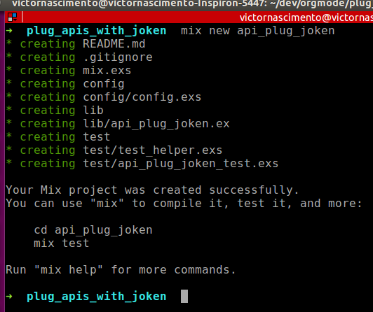

Plug + Joken
Victos O Nascimento
@cs-victor-nascimento
The power of Elixir
…and Emacs :D
Agenda
- Cenário
- Frameworks
- Fluxos de token
Cenário
SIGN IN | SIGN UP | GET USER
- POST /user/sign_up
- Valida os dados
- Cria um usuário no banco
- Gera um token e o salva no banco
- POST /user/sign_in
- Valida os dados
- Gera um token e o salva no banco
- GET /user/{user_id}
- Retorna o usuário
Frameworks utilizados
Mas está faltando coisa…
Phoenix????
2MM de conexões em uma máquina!!!
Ecto????
Tem até conector para MongoDB!!!
Phoenix vale a pena?
CLARO! Mas qual o overhead?
- Focado em channels e renderização de templates
- Aceita Plugs, então fácil migrar
- Suporta APIs mas traz mais do que precisamos
E o Ecto?
Nosso caso é muito simples
- O Erlang já vem com um banco de dados
- O Erlang já vem com uma query language
- É importante conhecer essa linguagem mesmo que vá usar Ecto
- A apresentação fica mais portável \o/
1. MIX

mix.exs
# precisamos dessas aplicacoes startadas def application do [applications: [:logger, :cowboy, :plug, :amnesia], # Nosso módulo que inicia tudo mod: {ApiPlugJoken, []}] end # estamos usando a branch master de algumas coisas aqui defp deps do [{:amnesia, github: "meh/amnesia", branch: "master"}, {:poison, "~> 1.5.0"}, {:cowboy, "~> 1.0.0"}, {:plug, "~> 1.0"}, {:joken, github: "bryanjos/joken", branch: "master"}] end
mix do deps.get, compile
ApiPlugJoken
defmodule ApiPlugJoken do use Application def start( _type, _args ) do # Chamamos nosso router daqui {:ok, _} = Plug.Adapters.Cowboy.http ApiRouter, [] end end
Amnesia and the art of forgetting!
- Criado pelo "meh" (sério!)
- É uma camada Elixir sobre o
:mnesia - Usa o Exquisite (também criado pelo… "meh") como query language
- É uma camada sobre
:qlc
Definindo nosso banco
lib/api_plug_joken/db.ex
use Amnesia # necessario para importar nossas macros defdatabase ApiPlugJoken.DB do deftable User, [{:id, autoincrement}, :name, :email], [type: :ordered_set, index: [:email]] do # funcoes de User end deftable JWT, [:jti, :exp, :iat, :nbf, :iss, :aud], type: :bag do # funcoes de JWT end end
Criando o banco de dados
Basta usar uma mix task!
Esqueleto do nosso cenário
lib/api_plug_joken/api_router.ex
defmodule ApiRouter do use Plug.Router plug Plug.Parsers, parsers: [:json], json_decoder: Poison plug :match plug :dispatch post "/user/sign_up", do: send_resp(conn, 201, "sign UP") post "/user/sign_in", do: send_resp(conn, 200, "sing IN") get "/user/:user_id", do: send_resp(conn, 200, "user id #{user_id}") match _, do: send_resp(conn, 404, "oops") end
Começando pela criação do usuário
import Joken alias ApiPlugJoken.DB.User alias ApiPlugJoken.DB.JWT plug Plug.Parsers, parsers: [:json], json_decoder: Poison
post "/user/sign_up" do user = User.validate_and_parse(conn.body_params) |> User.write! jwt = JWT.generate(user) compact_jwt = token |> with_claims(jwt) |> sign(hs256("A galinha nao amamenta")) |> get_compact resp_body = Poison.encode!(Map.put(user, :token, compact_jwt)) conn |> put_resp_header("content-type", "application/json") |> send_resp(201, resp_body) end
User e JWT revisited
ApiPlugJoken.DB.User
def validate_and_parse(%{"name" => rname, "email" => remail}) do if is_nil(remail), do: raise "email is required" %User{name: rname, email: remail} |> User.write! end
ApiPlugJoken.DB.JWT
deftable JWT, [:jti, :exp, :iat, :nbf, :iss, :aud], type: :bag do import Joken def generate(%{id: id}) do %JWT{ exp: current_time + (2 * 60 * 60), iat: current_time, nbf: current_time - 1, iss: "Joken Showcase Server", aud: "RESTCLIENT", jti: id} |> JWT.write! end end
Exemplo de resposta
{
"token": "eyJhbGciOiJIUzI1NiIsInR5cCI6IkpXVCJ9.
eyJhdWQiOiJSRVNUQ0xJRU5UIiwiZXhwIjoxNDQ2ODcyMTM4LCJpYXQiOjE0NDY4NjQ5MzgsImlzcyI6Ikpva2VuIFNob3djYXNlIFNlcnZlciIsImp0aSI6NywibmJmIjoxNDQ2ODY0OTM3fQ
.9h4ToQV7htWw3tw_P0KmXwb0qZ0uD2UBaCnM9U0VWjQ",
"name": "Joseph",
"id": 7,
"email": "ciclano@email.com"
}
Mas que diabos??? Capiroto???
Entendo melhor um JWT
- Header
- Claim set
- Assinatura
Exmeplo do nosso header
{
"alg": "HS256",
"typ": "JWT"
}
Possíveis algoritmos

Claim set
- exp: expiração
- nbf: not before
- iat: issued at
- iss: issuer
- aud: audience
- jti: jwt id
Mais customizados.
Sign in (login)
post "/user/sign_in" do require User require Exquisite body_name = conn.body_params["name"] body_email = conn.body_params["email"] result = User.where!(name == body_name and email == body_email) |> Amnesia.Selection.values user = case result do [] -> raise "Unauthenticated" [user] -> user _ -> # mais de um! raise "Unauthenticated" end jwt = JWT.generate(user) generate_token_and_reply(conn, 200, user, jwt) end
Usando o token
get "/user/:user_id" do require User require Exquisite # validate token validate_auth(get_req_header(conn, "authentication")) user = User.read! String.to_integer(user_id) conn |> put_resp_header("content-type", "application/json") |> send_resp(200, Poison.encode!(user)) end
Validando o token
defp validate_auth(["Bearer " <> jwt_token]) do require JWT require Exquisite jwt = jwt_token |> token |> with_validation("exp", &(&1 > current_time)) |> with_validation("iat", &(&1 < current_time)) |> with_validation("nbf", &(&1 < current_time)) |> with_validation("iss", &(&1 == "Joken Showcase Server")) |> with_validation("aud", &(&1 == "RESTCLIENT")) |> verify(hs256("A galinha nao amamenta"), as: JWT) |> get_claims [jwt] = JWT.where!(id == jwt.id) |> Amnesia.Selection.values end defp validate_auth(_), do: raise "Unauthenticated"
Mas podemos fazer melhor!
Joken.Plug for the win!
Joken Plug
2 configurações:
- Para todas as rotas
- Com configurações POR ROTA!
Configuração por rota
Usando config por rota:
- Necessário plugar ENTRE
:matche:dispatch - Passa-se um mapa em private para a rota
Refatorando: config
@skip_auth %{joken_skip: true} @verify_get %{joken_on_verifying: &ApiRouter.verify/0} plug :match plug Joken.Plug, on_error: &ApiRouter.error_logging/2 plug :dispatch
Refatorando: verificação
def verify do %Joken.Token{} |> with_json_module(Poison) |> with_exp |> with_iat |> with_nbf |> with_iss("Joken Showcase Server") |> with_aud("RESTCLIENT") |> with_validation("exp", &(&1 > current_time)) |> with_validation("iat", &(&1 < current_time)) |> with_validation("nbf", &(&1 < current_time)) |> with_validation("iss", &(&1 == "Joken Showcase Server")) |> with_validation("aud", &(&1 == "RESTCLIENT")) |> with_signer(hs256("A galinha nao amamenta")) end
É isso aí pessoal \o/
victor.nasciment <at> concretesolutions.com.br @cs-victor-nascimento @olinasc
Joken: https://github.com/bryanjos/joken
Perguntas?